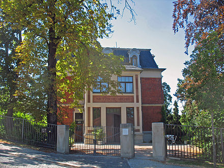
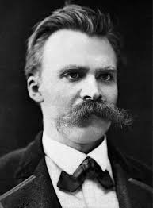
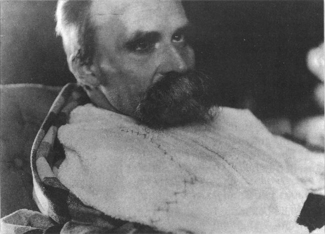

My final project is a website dedicated to my favorite philosopher Friedrich Nietzsche.
Nietzsche was a great figure amongst his contemporary European philosophers.
In this website I will describe to the user, Nietzsche's work, his life, and his influence on pop culture.
I intend on focusing on Thus Spoke Zarathustra, The Anti-Christ, and the Geneology of Morals.
I will make this project interactive and responsive to geographic images corresponding with Nietzsche's life.